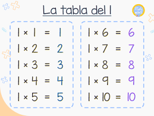
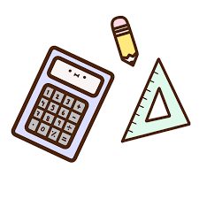

Inicio
Bienvenid@!
¡Hola y bienvenid@ a nuestra página web! Somos JOYSTECK una empresa de software creada en el 2022 con el afan de cubrir varias necesidades
Estamos especialidados en ofrecerte:
¡Comencemos!
- Diseño de aplicaciones moviles
- Creacion de sistemas
- Creacion de paginas web
- Programas en lenguaje C, JAVA,HTML y PHP
Agunos de nuestros trabajos son los siguientes:

Y como tambien queremos ayudarte aquí encontrarás una variedad de herramientas y recursos útiles para ayudarte en tus tareas cotidianas.
Podras practicar las tablas de multiplicar
 Realizar cálculos rápidos con nuestra calculadora

Convertir unidades de medida con nuestro conversor
 Medir el tiempo con nuestro temporizador y cronómetro
Medir el tiempo con nuestro temporizador y cronómetro

Esperamos que encuentres todo lo que necesitas y que disfrutes explorando nuestra página.